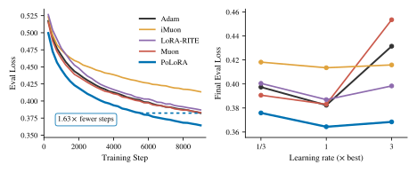
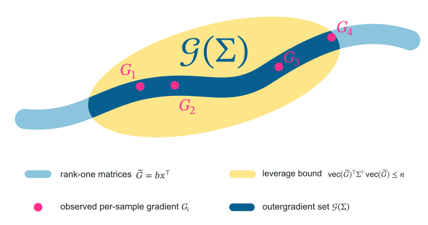
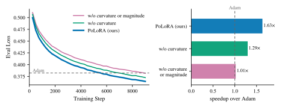
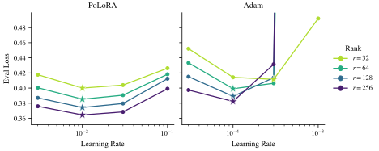
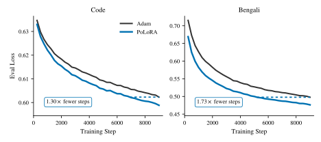

LoRA trains a product
For a frozen pretrained weight \(W_0\), LoRA represents the trainable update as a product of two factors:1
For LoRA, the first-order approximation of the update \(\Delta W\) is:
An optimizer defined using \(\Delta W\) should account for the specific structure induced by LoRA.
Product Muon
For a weight matrix with gradient \(G\), Muon[2] is defined by a linear minimization oracle (LMO)[4]
The solution is the matrix sign2 of the gradient, scaled by \(-\eta\),
where \(G=U\Sigma V^\top\) is the reduced singular value decomposition.
Substituting \(\eqref{eq:lin}\) for \(\Delta W\) in \(\eqref{eq:lmo}\) gives the constraint \(\|B\Delta A+\Delta B A\|_2\leq\eta\), which couples \(\Delta A\) and \(\Delta B\), making the LMO difficult to solve. We can decouple the two unknowns by using the subadditivity of the spectral norm. Subadditivity bounds the left-hand side by \(\|B\Delta A\|_2+\|\Delta B A\|_2\), so bounding each of those two terms by \(\eta/2\) implies \(\|B\Delta A+\Delta B A\|_2\leq\eta\) and decouples the unknowns. The result is the Product Muon method:3
The resulting factor updates of Product Muon are given by
with \(S_B=B^\top B\), \(S_A=AA^\top\), and factor gradients \(G_A=B^\top G\), \(G_B=GA^\top\).
This step is product-aware, but trains barely faster than Adam (Experiments).
Preconditioned Muon
We first derive a preconditioned version of Muon for a full weight matrix \(W\), before adapting it to the LoRA factors \(A\) and \(B\) in the next section. The spectral constraint4 \(\|\Delta W\|_2\leq\eta\) in Muon is equivalent to
This bounds the largest change in the layer’s output over all unit-norm inputs[10]. However, controlling the layer's output is at best a proxy for what we really care about, which is the loss of the network.
Let \(x_1,\ldots,x_n\) be the input activations to layer \(W\), and let \(\ell_i\) be the loss on activation \(x_i\), with gradient \(G_i\). To first order around the current \(W\), the change in \(\ell_i\) is
To keep training stable, we would like to bound \(\Delta\ell_i\) across the batch, by taking a steepest descent step subject to a bound on each sample’s loss change, solving
The per-sample constraints in problem \(\eqref{eq:ls}\) are difficult to enforce, since we lack efficient access to the individual sample gradients \(G_i\). To get around this issue, we define a more tractable outergradient set \(\mathcal{G}\) that contains every per-sample gradient \(G_i\). Thus, for any update \(\Delta W\),
We construct \(\mathcal{G}\) using two properties shared by every \(G_i\). Let \(\Sigma:=\frac{1}{n}\sum_{i=1}^{n}\operatorname{vec}(G_i)\operatorname{vec}(G_i)^\top\) be the second moment of the vectorized gradients.
- Rank one. Each per-sample gradient is an outer product, \[ G_i=b_ix_i^\top, \qquad b_i\in\mathbb{R}^{d_{\mathrm{out}}},\;\; x_i\in\mathbb{R}^{d_{\mathrm{in}}}. \]
- Leverage bound. Every gradient is bounded in the metric induced by \(\Sigma\), \[ \left\langle\Sigma^{\dagger}\operatorname{vec}(G_i),\operatorname{vec}(G_i)\right\rangle\leq n. \]
These two properties motivate the following definition of the outergradient set,

A dense estimate of \(\Sigma\) would be too large to store or invert. For tractability, we approximate it by a Kronecker product of positive definite preconditioners[11][12][13]
With this Kronecker approximation, the maximum of \(\langle\widetilde G,\Delta W\rangle\) over \(\widetilde G\in\mathcal{G}(Q\otimes P)\) is exactly a preconditioned spectral norm[14],
Absorbing5 \(\sqrt{n}\) into \(\tau\) gives a constraint on \(\Delta W\) sufficient to guarantee the per-sample bounds in problem \(\eqref{eq:ls}\). Replacing those \(n\) per-sample constraints with this single constraint gives the following problem in place of \(\eqref{eq:ls}\):
The solution of problem \(\eqref{eq:pls}\) yields the preconditioned Muon update6
The preconditioners \(P\) and \(Q\) are fit online7, and for efficiency are diagonal.
The PoLoRA direction
The previous section derived an update for a full weight matrix \(W\). We now adapt it to the LoRA factors \(A\) and \(B\), deriving their update direction here; the next section sets its magnitude. Replacing \(\Delta W\) with the linearized product update \(\eqref{eq:lin}\) in \(\eqref{eq:pls}\) gives
Norm subadditivity again bounds the left-hand side by the sum of the two factor terms, so bounding each by \(\tau\) decouples the problem into one minimization problem per factor5:
The solution of problems \(\eqref{eq:fls}\) gives factor update directions
where \(C_B:=B^\top PB\) and \(C_A:=AQA^\top\) are both \(r\times r\) matrices.
The magnitude rule
The constraints in the Product Muon LMO bound \(\Delta W\approx B\Delta A+\Delta B A\), but not the factor updates \(\Delta A\) and \(\Delta B\) themselves. In fact, the updates satisfy
which diverge as the smallest singular values of \(B\) and \(A\) shrink9.
To ensure that \(\|\Delta A\|_2\) and \(\|\Delta B\|_2\) stay balanced independent of the conditioning of \(A\) and \(B\), we rescale the updates so that \(\|\Delta A\|_2=\|\Delta B\|_2=\rho\), where
so that by the triangle inequality and norm submultiplicativity,
The resulting updates are
where \(D_A\) and \(D_B\) are given by \eqref{eq:factor-directions}.
The PoLoRA step
The PoLoRA direction and magnitude rule combine into the update below, applied once per adapted \((A,B)\) pair each optimizer step. For the full implementation, we also add momentum for the factor gradients and an online refit of the preconditioners \(P,Q\).
PoLoRA step for an \((A,B)\) pair
\(\eta\) learning rate, \(\beta_1\) momentum decay, \(\beta_2\) curvature decay, \(\varepsilon\) stability constantMomentum
Update factor-gradient EMAs, then form look-ahead momentum for the direction.
Direction
Compute the directions \(\eqref{eq:factor-directions}\) with \(\widehat M_A\) and \(\widehat M_B\) in place of the factor gradients.
Magnitude
Rescale both factor updates to have the same spectral norm.8
Preconditioner update
Update the preconditioner vectors \(p\) and \(q\) from the current factor gradients.7
Computational cost
The two non-trivial numerical subroutines in the optimizer step are the matrix sign of a \(d\times r\) matrix, in the direction step, and the inverse square root of an \(r\times r\) matrix, in the preconditioner-update step. Since the matrix sign can be written as
the core operation for both is an \(r\times r\) inverse square root, computed with Gram Newton–Schulz[16]. Compared to using standard Newton-Schulz iterations on \(X\) directly to compute the matrix sign, this approach saves a factor of order \(d/r\) computation per iteration.
Gram Newton–Schulz
Each iteration applies a degree-five polynomial \(p_t(s)=a_ts+b_ts^3+c_ts^5\) to the singular values of \(X\). The polynomials are chosen so that \((p_K\circ\cdots\circ p_1)(s)\approx1\) for every singular value \(s\). Writing \(X=US V^\top\) for the reduced SVD,
Because \(p_t\) is odd, this reduces to right-multiplying \(X\) by a matrix polynomial in the \(r\times r\) Gram matrix \(R:=X^\top X\)[16],
For our implementation, the coefficients \(a_t,b_t,c_t\) are set using PolarExpress[17].
Gram Newton–Schulz
input: \(R_0\in\mathbb{R}^{r\times r}\)The returned \(Z\) approximates \(R_0^{-1/2}\). Calling the subroutine with \(R_0=X^\top X\) and returning \(XZ\) gives \(\operatorname{msign}(X)\).
Every Gram Newton–Schulz call runs for \(K\) iterations which contributes \(\Theta(Kr^3)\) FLOPs to the optimizer step cost. Over a batch of \(n_{\mathrm{tok}}\) tokens, the leading-order FLOPs for the optimizer step and the forward and backward passes are
The per-layer overhead ratio is
The relative overhead shrinks as \(n_{\mathrm{tok}}\) grows and as \(d_{\mathrm{in}}, d_{\mathrm{out}}\) grow relative to \(r\).
Experiments
For a given model and dataset, every optimizer trains with the same fixed hyperparameters except learning rate. We sweep each optimizer and select its best learning rate.
Experimental configuration
| Base models | OLMo-2-1B[18], Llama-3.2-1B[19], Qwen2.5-1.5B[20], Llama-3-8B |
|---|---|
| Datasets | OpenCoder[22], OpenMathInstruct-2[23], Bengali Aya[24] |
| Batch size | 16 |
| Sequence length | 2,048 |
| Schedule | constant learning rate, no weight decay |
| Gradient clip | max global norm \(1.0\) (disabled for LoRA-RITE[21]) |
| LoRA init | \(A\) initialized randomly, \(B\) initialized to zero, \(\alpha=r\)[26][27] |
| LoRA layers | every linear layer except lm_head |
PoLoRA speedups
The number of steps a tuned optimizer needs to reach the final loss achieved by tuned Adam.
The step speedup of an optimizer is Adam’s training horizon divided by its steps-to-Adam. Its wall-clock speedup, shown in parentheses, further accounts for the measured per-step overhead.
| Base model | Code step (wall-clock) |
Math step (wall-clock) |
|---|---|---|
| OLMo-2-1B | 1.61× (1.57×) | 1.74× (1.70×) |
| Llama-3.2-1B | 1.55× (1.51×) | 1.63× (1.58×) |
| Qwen2.5-1.5B | 1.30× (1.27×) | 1.64× (1.60×) |
| Llama-3-8B | 1.20× (1.18×) | 1.59× (1.56×) |
Component ablation
Starting from PoLoRA, we ablate curvature preconditioning and then the magnitude rule. Ablating both components results in Product Muon, which yields no speedup over Adam. Curvature preconditioning and magnitude control each account for about half of PoLoRA’s gain over Adam.

Learning-rate transfer across ranks
For Llama-3.2-1B finetuned on math, PoLoRA’s optimal learning rate is stable across rank, while Adam’s shifts. PoLoRA also shows less loss sensitivity to the learning rate. Its relative speedup over Adam roughly grows with the rank.
| Rank | 32 | 64 | 128 | 256 |
|---|---|---|---|---|
| Step (wall-clock) | 1.48× (1.44×) | 1.54× (1.50×) | 1.52× (1.49×) | 1.63× (1.58×) |

Effect of the dataset
PoLoRA’s speedup over Adam is larger on Bengali, a low-resource language underrepresented in the model’s pretraining data, compared to code which is better represented.

We conjecture that PoLoRA’s advantage grows in settings where the update has more ability and incentive to adapt, whether from a higher rank or from further out of distribution finetuning data.
Conclusion
PoLoRA brings the performance gains of matrix-aware optimizers from pretraining into the LoRA finetuning setting, establishing the importance of the following principles.
Principles of PoLoRA
- Product awareness: Account for the merged update \(\Delta W \approx B\Delta A+\Delta B A\) and not just each factor update on its own.
- Loss-sensitive direction: Update in directions that are sensitive to changes in the loss.
- Magnitude control: Ensure the magnitude of the updates is controlled in order to be insensitive to arbitrary conditioning.
It is possible that there is more to be gained in the LoRA setting than in pretraining, since the LoRA factorization itself can produce an ill-conditioned optimization landscape. We see several directions for extending our work.
- Better approximations. PoLoRA relies on several simplifications:
- diagonal preconditioners \(P\) and \(Q\),
- a Kronecker-factored approximation \(\eqref{eq:kron-approx}\) of the per-sample second moment \(\Sigma\),
- linearization of the update \(\Delta W\) \(\eqref{eq:lin}\),
- an outergradient set \(\eqref{eq:outergrad-set}\) that is a conservative superset of the sample gradients.
- Beyond LoRA. The principles behind PoLoRA are not specific to LoRA — they may extend to pretraining or to other structured parameterizations.
- Scaling up. Do the gains continue to hold at larger model or data scale, or in other settings like continued pretraining?
Footnotes
- LoRA is usually written \(W=W_0+(\alpha/r)BA\) with a scaling parameter \(\alpha\). We set \(\alpha=r\) throughout[26][27], so the factor \(\alpha/r\) equals \(1\) and drops out. ↩
- The matrix sign is also called the orthogonal polar factor[5]. When \(G\) is rank-deficient the minimizer is not unique, and \(\operatorname{msign}(G)=UV^\top\) is one choice. ↩
- Several concurrent works derive variants of such a product-aware Muon step[6][7][8][9]. ↩
- The spectral norm \(\|\cdot\|_2\) of a matrix is its largest singular value. Applied to a vector, it denotes the \(\ell_2\)-norm. ↩
- The value of \(\tau\) only scales the direction, since \(\operatorname{msign}(cX)=\operatorname{msign}(X)\) for \(c>0\). The update magnitude is set separately in the magnitude rule, so we can absorb constants into \(\tau\). ↩a ↩b
- Setting \(P=I_{d_{\mathrm{out}}}\) and \(Q=I_{d_{\mathrm{in}}}\) recovers the Muon update. ↩
- We adapt the KL-Shampoo update[15]; see Appendix D of the paper for the derivation. ↩a ↩b
- Spectral norms are estimated by warm-started power iteration. ↩
- This actually diverges for the default initialization choice of \(B=0\). ↩
References
- LoRA: Low-Rank Adaptation of Large Language Models
- Muon: An Optimizer for Hidden Layers in Neural Networks
- Adam: A Method for Stochastic Optimization
- Training Deep Learning Models with Norm-Constrained LMOs
- Modular Duality in Deep Learning
- LoRA-Muon: Spectral Steepest Descent on the Low-Rank Manifold
- Intrinsic Muon: Spectral Optimization on Riemannian Matrix Manifolds
- Towards Compositional Steepest Descent
- LoRA meets Riemannion: Muon Optimizer for Parametrization-independent Low-Rank Adapters
- A Spectral Condition for Feature Learning
- Optimizing Neural Networks with Kronecker-factored Approximate Curvature
- Shampoo: Preconditioned Stochastic Tensor Optimization
- SOAP: Improving and Stabilizing Shampoo using Adam
- Preconditioned Spectral Descent for Deep Learning
- Understanding and Improving Shampoo and SOAP via Kullback–Leibler Minimization
- Gram Newton–Schulz: A Fast, Hardware-Aware Newton–Schulz Algorithm for Muon
- The Polar Express: Optimal Matrix Sign Methods and Their Application to the Muon Algorithm
- 2 OLMo 2 Furious
- The Llama 3 Herd of Models
- Qwen2.5 Technical Report
- LoRA Done RITE: Robust Invariant Transformation Equilibration for LoRA Optimization
- OpenCoder: The Open Cookbook for Top-Tier Code Large Language Models
- OpenMathInstruct-2: Accelerating AI for Math with Massive Open-Source Instruction Data
- Aya Dataset: An Open-Access Collection for Multilingual Instruction Tuning
- A Rank Stabilization Scaling Factor for Fine-Tuning with LoRA
- LoRA Learns Less and Forgets Less
- Practical Tips for Finetuning LLMs Using LoRA
Citing this work
@misc{ghosh2026polora,
title = {PoLoRA: A Preconditioned Orthogonalized LoRA Optimizer},
author = {Ghosh, Nikhil and Parshakova, Tetiana and Gower, Robert M.},
year = {2026},
eprint = {2607.17620},
archivePrefix = {arXiv},
primaryClass = {cs.LG}
}
The implementation is available at github.com/nikhilgsh/polora, and the preprint at arXiv:2607.17620.